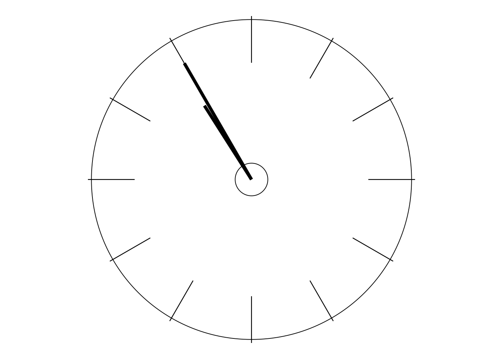

OUTLINE OF THE COURSE
As you have already seen, this Overture contains lots of “bits and pieces” about what is to follow during the course. When the Overture ends, the curtain goes up and the story begins. And that is true in two senses for what happens on this opening day.
This afternoon we shall set the scene for learning about Dr Deming’s work, primarily by providing a brief account of his life story. The purpose is not just to give you a history lesson—though many people find the history quite fascinating in its own right. The main purpose is to use his life story to quickly provide you with some insight on how and why his understanding and teaching developed in the way that they did, how one thing led to another, and where and how some of the themes from this Overture fit into the main event. Then, on future days, as we study particular aspects of his teaching in greater and deeper detail, you’ll begin to understand how they fit into the jigsaw. And, in many respects, Deming’s teaching is indeed like a jigsaw—with lots and lots of pieces! Also like a jigsaw, the pieces do all fit together—though sometimes it can take a while to see how. But it will be worth the wait! For, yet again like a jigsaw, it is only when the pieces start fitting together, and you see how and why they fit together and thus become aware of how the picture is developing, that you will begin to appreciate the importance and potential and strength of Dr Deming’s unique contribution to management understanding.
In the opening section I briefly related how, not long before his 79th birthday, Deming was at long last “discovered” in his home country of America and subsequently elsewhere in the West. But this afternoon’s account starts at the very beginning, expands in particular on his formative work with Dr Walter Shewhart in the 1920s, through his main work with the Japanese in the 1950s, and then his eventual discovery in the West and what happened thereafter. Chapter 2 of DemDim (remember: that’s my book The Deming Dimension) provides useful additional and complementary reading to what is written here and follows essentially the same pattern as used this afternoon.
Although I hope you will find both this morning’s Overture and this afternoon’s “Deming story” to be mostly easy reading, there are times when you should be prepared to slow down and engage in some relatively deeper study and thought—else you may find this first day will turn out to be more like half a day (depending on the speed at which you read). So it is worth my giving you some advance notice of those occasions.
Firstly, there will be a few of those “requests for action” that I described in the previous section, and it would usually be wise not to rush through those. But, in addition, there are three short sections of the text (each occupying no more than two pages) that are well worth reading and re-reading slowly and carefully in order to gain a real appreciation of what they are saying and of their importance.
The first of these important sections occurs later this morning: the one titled “Deming is different”. (And how!) Then, this afternoon, the second particularly important section follows my account of the 1920s which, as you would now expect, will focus on understanding variation. So far I have mostly concentrated on what Shewhart’s discoveries did not involve, namely ideas and techniques of “traditional” Statistics. In contrast, at this stage of the afternoon I shall present a compact summary of what I’ll refer to there as “Shewhart’s breakthrough”, covering both what the main concepts are and why they are so important in practice. And later on, when we reach the 1950s, the last of these three vitally important short sections is Deming’s own summary of what he taught the Japanese all those decades ago.
So each of these three short sections briefly introduces a host of features of, or strongly related to, Dr Deming’s teaching. The more you can become really familiar with these features at this early stage, the better prepared you will be for what you’ll find later on. If you are working on your own, you might write some notes on the matters raised in these sections, including your thoughts about how different life would be if you were working under or with a management that is being guided by Deming’s teaching. If you are with a group then, of course, you have the opportunity to engage in some introductory discussion on these same matters. My guidance on timings should be particularly helpful to you in judging how long to spend on such occasions.
You might find it helpful to briefly check out those three sections right now and make a note to give them special attention when the time comes. The first section is on pages 27 and 28; the second section starts at the bottom of page 31 and continues to the middle of page 33; and the third section is on page 35.
Finally, at the end of the day, there will be your first “Major Activity”. This one will help you to appreciate the truth of what might initially appear to be a rather controversial claim, but which is a yet further foundation for much of what will follow. Getting all these foundations firmly in your mind will be extremely helpful preparation for the rest of the course, and for your understanding of how and why Deming’s unique teaching is so different but yet so valuable compared with what is generally to be found elsewhere.
In addition to this afternoon’s “Deming story”, there is a broader sense in which this course is designed in a “telling the story” mode. By and large (but not slavishly), the remaining 11 days cover Deming’s learning and teaching in the chronological order in which they developed. That sense of how things progressed over time, “how one thing led to another” as I’ve already expressed it, I found to be very helpful in my own learning, and so I have always adopted the same approach in my teaching. Thus, of course, Days 2 and 3 will concentrate on the obvious starting-point: understanding variation. As you already know, Dr Walter Shewhart’s crucially important breakthrough in this area during the 1920s was really where it all began. How young Mr W Edwards Deming (not yet Dr Deming) became involved as early as the mid-1920s will be included in this afternoon’s account. Days 2 and 3 will be no sophisticated academic treatise on understanding variation: instead, most of the time will be spent working with two experiments that Dr Deming used in his seminars.
Tomorrow, on Day 2, we shall describe and work with Dr Deming’s renowned “Experiment on the Red Beads”, performed (to the best of my knowledge) at every one of his four-day seminars from at least 1982. (However, referring e.g. to Out of the Crisis page 300[pages 351–352], it is clear that he had been using some version of it since the 1950s if not for longer.) I have already indicated that, when referring to “understanding variation”, we are generally concerned with how to sensibly interpret data that are generated by “processes” or “systems”. Such data are usually recorded over time: hourly, daily, weekly, monthly, etc; the experts often refer to these data as time-series data. But, compared with what I have just written and as you will soon see tomorrow, the Red Beads Experiment demonstrates all too clearly how easy it is not to interpret time-series data sensibly!
For a long while, the Red Beads Experiment was the only experiment included in the four-day seminars. However, in his final few years, Deming also added a discussion of the “Funnel Experiment” which was invented by Lloyd Nelson in 1986. I will give you advance notice that on Day 3 we do not merely have a “discussion” of the Funnel Experiment: instead, during the afternoon, you will actually be carrying it out, although in a rather more convenient form compared with Dr Nelson’s original version (now using a couple of dice rather than a funnel and a marble!).
Deming sometimes described the Red Beads Experiment as “stupidly simple”. The same description could easily be applied to the Funnel Experiment. So what does the Funnel Experiment demonstrate?
I expect you will be familiar with the old saying that “the road to Hell is paved with good intentions”. Deming’s version, often repeated in his seminars, was:
“The world is being ruined by best efforts.”
But what could be wrong with good intentions and best efforts? Nothing—if (and that’s a big “if”) they are guided by genuine understanding. But if they are not so guided then those good intentions and best efforts may not only fail to improve matters: they can all-too-easily make things worse, sometimes much worse. (You might be able to think of some political examples of that effect!) Early this afternoon you will find Deming referring as follows to this phenomenon as he saw it happening in Western Electric, the company where he met and worked with Dr Shewhart:
“ … the harder they tried, the worse were the effects. … When anything bad occurred, they went to work on it to try to correct it. A noble aim. There was only one little trouble—their noble efforts did not work. Things got worse. … Sure we don’t like things which go wrong—but if we wade in at them without understanding then we make things worse.”1
In the context of the Funnel Experiment, what’s missing is the understanding of what Deming meant by a “stable system”. The reason I want you to try out the Funnel Experiment for yourself on Day 3 is that, if I merely tell you about the kind of things that can happen, you might not believe me! But when they happen to you while you are carrying out the experiment, you’ll just have to believe them!
When I met and began working with Dr Deming in 1985, besides the Red Beads Experiment the majority of the time in his four-day seminars involved his 14 Points (sometimes he called them “Obligations”) for Man- agement, along with the “Deadly Diseases” of Western Management that need to be cured, plus a long list of “Obstacles”—which we could regard as “minor diseases”, but diseases nonetheless. We shall study the 14 Points and the Deadly Diseases on Days 4 and 5, and the Obstacles in the afternoon of Day 7.
As a relief from the possible gloom to do with diseases, obstacles, and the fact that many managers certainly do not regard the 14 Points as “Obligations”, on Day 6 we return to the story-telling mode. The concentration there is on the way a particular company, Gallery Furniture in Houston, Texas, made a huge suc- cess of adopting the 14 Points and curing the Deadly Diseases during the 1990s, and of the resulting effects on its business. (You might like to check out http://www.galleryfurniture.com to see how the company is faring all these many years later.)
Hopefully encouraged by that story, we return on Day 7 to many of the problematic matters that are raised in the 14 Points, etc. Day 7 includes numerous true stories to demonstrate the validity of what Deming taught about those matters: there are also a few such stories at the end of Day 6 to provide a stark contrast to what we will have been learning earlier about Gallery Furniture!
The content of the four-day seminars as indicated so far began to change in 1987, first steadily but then, so it seemed, at an ever-increasing pace. Dr Deming was, of course, now in his late 80s, and so he must have begun to realise that his time was limited, and that he had much, much more to teach.
Around that time there were three big new emphases that struck me as particularly important. They were:
- the importance of genuine cooperation in business compared with competition and conflict;
- the need for innovation rather than just improvement; and
- “Joy in Work”, three little words which take the concept of “pride of workmanship” (featured in the 12th of the 14 Points) a long stride further.
We shall cover these three emphases on Day 8 (see also DemDim Part 3: “The New Climate”).
On Day 9 we shall concentrate on two topics. Firstly, the concept of a “system”. Now this was absolutely fundamental in Deming’s thinking from his early learning with Dr Shewhart; indeed the need to regard “the organisation as a system” featured strongly in his teaching to the Japanese in the 1950s. But in retrospect it seems to me that, during the first couple of years that I knew him, he did not dwell as much on this as might have been expected. But he certainly did so by, say, 1988–89. And, as my second topic here, also in 1989 he started talking of “Profound Knowledge”: “Profound” indeed, deep not superficial, and “Knowledge”—knowledge and understanding as compared with mere information.
Later in 1989 those two topics merged into his “System of Profound Knowledge”, much of whose content is encountered and studied during the Second Project on Days 10 and 11. Now, “System of Profound Knowledge” is a pretty scary phrase. In my own seminars, I rarely mentioned it until relatively late in the event, i.e. not before much else had already been covered. But then I always enjoyed seeing the sense of relief on my delegates’ faces when it began to dawn on them that they were already familiar with much of what is contained in the System of Profound Knowledge from what they had learned earlier in the seminar! Similarly, here the System of Profound Knowledge as such is largely left until quite late in the course. But, again as in the seminars, you will find that, by that time, much of it will not be new to you. That being the case, there will now be an even greater emphasis on the “system” nature of Deming’s teaching, i.e. the way that things link together, including the four parts of the System of Profound Knowledge: no longer just lots of “bits and pieces” but instead a strongly coordinated whole. I believe we should regard the System of Profound Knowledge as Dr Deming’s attempt to bring together and consolidate his whole long life’s learning as a rich legacy for us from which to continue learning after he was no longer with us.
And lastly, the process of beginning to bring it all together—and making it happen—is the subject of our 12th and final day. And I must surely emphasise “beginning” to do that. You have already seen me using the phrase “lifelong learning” near the top of page 13. Believe me: if this is not lifelong learning then I cannot imagine what is. I hope you were not deluded by the title of this course to think that it will all be over by the end of the 12th day! Perhaps I should have simply titled Day 12 as “The End of the Beginning”.
On 6 July 1989 Dr Deming spoke at a meeting which was organised by the Association Française Edwards Deming and held at the Palace of Versailles. I was present, recorded the proceedings and subsequently based BDA Booklet A6: Profound Knowledge on the event. This quotation on page 18 is one of many from that day which I have included during this course. Copies of the BDA Booklets (which are now known as Deming A5 Booklets) are obtainable from the UK’s Deming Transformation Forum: http://www.deming.org.uk.↩︎